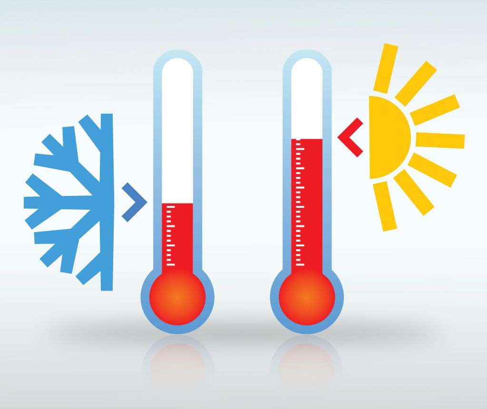

ESTRUCTURA DEL AMBIENTE
El medio es todo lo que nos rodea y el ambiente son todas las interacciones
El Ambiente es el sistema global constituido por elementos naturales y artificiales de naturaleza física, química, biológica, sociocultural y de sus interrelaciones, en permanente modificación por la acción humana o natural que rige o condiciona la existencia o desarrollo de la vida. Está constituido por elementos naturales como los animales, las plantas, el agua, el aire, y artificiales como las casas, las autopistas y los puentes. Incluye aquellas cosas que son producto del hombre y que lo incluyen.
ABIOTICOS
No tiene vida tiene 7 factores: energía, es la medida en forma de luz o calor de la capacidad para producir un efecto en los procesos vitales como son la fotosíntesis, maduración de frutas, floración, metabolismo
Los factores abióticos son los factores físicos y químicos que determinan las características de un biotopo: la luminosidad, presión, temperatura, humedad, salinidad, etc. ... Los factores bióticos son los relacionados con los seres vivos que habitan en un biotopo y las relaciones que se establecen entre sí.
A) LUZ SOLAR

Es la principal fuente de energía que mantiene directa o indirectamente a los ecosistemas
La luz solar, en el más amplio sentido, es el espectro total de radiacion electromagnetica proveniente del Sol. Esto es usualmente durante las horas consideradas como día. La radiacion termica producida directamente por la radiación del sol es diferente del incremento en la temperatura atmosférica debido al calentamiento radiactivo de la atmósfera por la radiación solar.
La luz solar directa proporciona alrededor de 93 lumines de iluminación por vatio de potencia electromagnética, incluyendo infrarojo, visible y ultravioleta.
B) TEMPERATURA

Podemos definir a la temperatura como la cantidad de grados que caracteriza la intensidad de calor. La temperatura puede variar dependiendo del medio, latitud y altitud.
La temperatura se mide con un aparato de precisión llamado termómetro, el cual se basa del volumen de una masa fija de fluido, que suele ser mercurio o alcohol. Estos elementos bajan o suben en una escala graduada cuando la temperatura disminuye o aumenta, respectivamente.